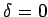
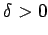

Allgemeine Form
Allgemeine Form einer linearen partiellen Differentialgleichung 2. Ordnung mit zwei unabhängigen Variablen x,y und einer unbekannten Funktion u heißt eine Gleichung der Gestalt
wobei die Koeffizienten A,B,C,a,b,c und das freie Glied f bekannte Funktionen von x und y sind.
Die Form der Lösung dieser Differentialgleichung hängt vom Vorzeichen der Diskriminante
in einem betrachteten Gebiet ab. Man unterscheidet die folgenden Formen:
-

: Hyperbolischer Typ.
-
: Parabolischer Typ.
-
: Elliptischer Typ.
-

ändert sein Vorzeichen: Gemischter Typ.
Eine wichtige Eigenschaft der Diskriminante besteht darin, daß ihr Vorzeichen invariant ist gegen beliebige Transformationen der unabhängigen Variablen, z.B. bei der Einführung neuer Koordinaten in der x,y-Ebene. Somit ist auch der Typ der Differentialgleichung eine Invariante bezüglich der Wahl der unabhängigen Variablen.